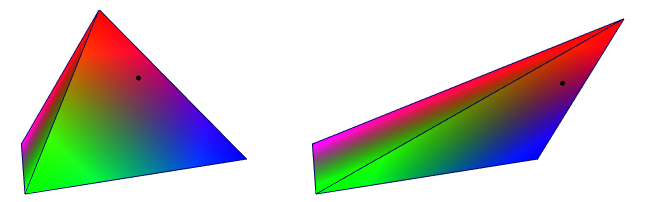

位置是表示几何对象上相对定位的特殊对象。位置是几何查询（例如 get_closest_locations 和 get_raycast_locations）的输出。可以使用位置对对象上存在的任何几何特性值进行采样，例如插值点定位、颜色等。
与定位不同，位置“粘合”到几何体，因此，即使几何体发生变换和变形，它们也会保持相同的相对定位。但是，如果在对几何体进行变换或变形后计算位置，则位置通常会有所不同。

要对位置的几何特性值进行采样，请执行以下操作：
将 sample_property 节点添加到图表中。
get_points_in_radius 查询并具有位置的二维数组，请改用 sample_property_2D。将位置连接到 locations 输入。例如，可以使用几何体查询（例如 get_closest_locations 或 get_raycast_locations）的输出，或者使用由存储在图表上游的位置组成的自定义几何特性的数据。
连接要从中获取特性值的几何体。它通常是最初用作几何体查询输入的同一对象，但不要求一定是同一对象：
指定要采样的 property。它必须是输入几何体上现有几何特性的名称。
通过单击鼠标右键并选择类型，或连接所需类型的 value 节点，指定 default 的值。这有两种用途：
sample_property 节点发出信号以告知预期的值类型，并允许检查下游节点是否有类型错误。选择 method：
interpolated 返回最近点的特性的平均值，按距离加权。from_closest 返回最近点的特性的值。在下游计算中使用 sampled_data 输出数组的值。 如果需要，可以在无法对位置进行采样时，使用相应的 success 数组来执行适当的操作。数组的每个元素为 true 或 false，具体取决于是否可以在相应位置读取特性。数组中的值可能为 false 的原因有多种：
NaN 或 Inf 等值时，可能会发生这种情况。default 端口指定的类型不同。